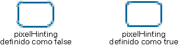

| Pacote | flash.display |
| Classe | public final class GraphicsStroke |
| Herança | GraphicsStroke |
| Implementações | IGraphicsStroke, IGraphicsData |
| Versão da linguagem: | ActionScript 3.0 |
| Versões de runtime: | Flash Player 10, AIR 1.5 |
Use um objeto GraphicsStroke com o método Graphics.drawGraphicsData(). Desenhar esse objeto equivale a chamar um dos métodos da classe Graphics que define o estilo de linha, por exemplo, os métodos Graphics.lineStyle(), Graphics.lineBitmapStyle() ou Graphics.lineGradientStyle().
Elementos da API relacionados
flash.display.Graphics.lineBitmapStyle()
flash.display.Graphics.lineGradientStyle()
flash.display.Graphics.drawGraphicsData()
 Ocultar propriedades públicas herdadas
Ocultar propriedades públicas herdadas Mostrar propriedades públicas herdadas
Mostrar propriedades públicas herdadas| Propriedade | Definido por | ||
|---|---|---|---|
| caps : String
Especifica o tipo de extremidades no final das linhas. | GraphicsStroke | ||
 | constructor : Object
Uma referência ao objeto de classe ou à função de construtor de uma determinada ocorrência de objeto. | Object | |
| fill : IGraphicsFill
Especifica a ocorrência que contém dados para preenchimento de um traçado. | GraphicsStroke | ||
| joints : String
Especifica o tipo de aparência de união usado nos ângulos. | GraphicsStroke | ||
| miterLimit : Number
Indica o limite no qual um mitre é cortado. | GraphicsStroke | ||
| pixelHinting : Boolean
Especifica se os traçados serão referenciados como pixels completos. | GraphicsStroke | ||
| scaleMode : String
Especifica o dimensionamento da espessura do traçado. | GraphicsStroke | ||
| thickness : Number
Indica a espessura da linha em pontos; os valores válidos são de 0 a 255. | GraphicsStroke | ||
| Método | Definido por | ||
|---|---|---|---|
GraphicsStroke(thickness:Number = NaN, pixelHinting:Boolean = false, scaleMode:String = "normal", caps:String = "none", joints:String = "round", miterLimit:Number = 3.0, fill:IGraphicsFill = null)
Cria um novo objeto GraphicsStroke. | GraphicsStroke | ||
|
Indica se um objeto tem uma propriedade especificada definida. | Object | |
|
Indica se uma ocorrência da classe Object está na cadeia de protótipos do objeto especificado como o parâmetro. | Object | |
|
Indica se a propriedade especificada existe e é enumerável. | Object | |
|
Define a disponibilidade de uma propriedade dinâmica para operações de repetição. | Object | |
|
Retorna a representação da string deste objeto, formatado segundo as convenções específicas para a localidade. | Object | |
|
Retorna a representação de string do objeto especificado. | Object | |
|
Retorna o valor primitivo do objeto especificado. | Object | |
caps | propriedade |
caps:String| Versão da linguagem: | ActionScript 3.0 |
| Versões de runtime: | Flash Player 10, AIR 1.5 |
Especifica o tipo de extremidades no final das linhas. Os valores válidos são: CapsStyle.NONE, CapsStyle.ROUND e CapsStyle.SQUARE. Se um valor não for indicado, o Flash usará extremidades arredondadas.
Por exemplo, as ilustrações a seguir mostram as diferentes configurações de estiloExtremidade. Para cada configuração, a ilustração mostra uma linha azul com uma espessura de 30 (à qual estiloExtremidade se aplica) e uma linha preta superimposta com espessura de 1 (à qual estiloExtremidade não se aplica):

Implementação
public function get caps():String public function set caps(value:String):voidElementos da API relacionados
fill | propriedade |
public var fill:IGraphicsFill| Versão da linguagem: | ActionScript 3.0 |
| Versões de runtime: | Flash Player 10, AIR 1.5 |
Especifica a ocorrência que contém dados para preenchimento de um traçado. Uma ocorrência de IGraphicsFill pode representar uma série de comandos de preenchimento.
Elementos da API relacionados
joints | propriedade |
joints:String| Versão da linguagem: | ActionScript 3.0 |
| Versões de runtime: | Flash Player 10, AIR 1.5 |
Especifica o tipo de aparência de união usado nos ângulos. Os valores válidos são: JointStyle.BEVEL, JointStyle.MITER e JointStyle.ROUND. Se um valor não for indicado, o Flash usará uniões arredondadas.
Por exemplo, as ilustrações a seguir mostram as diferentes configurações de uniões. Para cada configuração, a ilustração mostra uma linha azul com ângulo e uma espessura de 30 (à qual estiloUnião se aplica) e uma linha preta superimposta com ângulo e espessura de 1 (à qual estiloUnião não se aplica):

Observação: Para uniõesdefinidas comoJointStyle.MITER, é possível usar o parâmetro limiteMitre para limitar o comprimento do mitre.
Implementação
public function get joints():String public function set joints(value:String):voidElementos da API relacionados
miterLimit | propriedade |
public var miterLimit:Number| Versão da linguagem: | ActionScript 3.0 |
| Versões de runtime: | Flash Player 10, AIR 1.5 |
Indica o limite no qual um mitre é cortado. Os valores válidos variam de 1 a 255 (e os valores fora dessa faixa são arredondados para 1 ou 255). Esse valor apenas será usado se estiloUnião estiver definido como "mitre". O valor limiteMitre representa o comprimento pelo qual um mitre pode se estender além do ponto em que as linhas se juntam para formar uma união. O valor expressa um fator da espessura da linha. Por exemplo, com um fator limiteMitre de 2,5 e uma espessura de 10 pixels, o mitre é cortado em 25 pixels.
Por exemplo, considere as seguintes linhas com ângulo, cada uma desenhada com uma espessura de 20, mas com limiteMitre definido como 1, 2 e 4. Superimpostas são linhas de referência pretas que mostram os pontos de junção das uniões:

Observe que um determinado valor de limiteMitre tem um ângulo máximo específico para o qual o mitre é cortado. A tabela a seguir lista alguns exemplos:
Valor de limiteMitre: | Ângulos menores do que este são cortados. |
|---|---|
| 1.414 | 90 graus |
| 2 | 60 graus |
| 4 | 30 graus |
| 8 | 15 graus |
pixelHinting | propriedade |
public var pixelHinting:Boolean| Versão da linguagem: | ActionScript 3.0 |
| Versões de runtime: | Flash Player 10, AIR 1.5 |
Especifica se os traçados serão referenciados como pixels completos. Isso afeta tanto a posição das âncoras de uma curva quanto o tamanho do traçado da linha propriamente dito. Com referênciaPixel definido como true, o Flash Player faz a referência de larguras como larguras de pixels completos. Com referênciaPixel definido como false, desarticulações podem aparecer em curvas e linhas retas. Por exemplo, as ilustrações a seguir mostram como o Flash Player renderiza dois retângulos arredondados que são idênticos, exceto pelo fato de que o parâmetro referênciaPixel usado no método lineStyle() é definido de maneira diferente (as imagens são dimensionadas em 200% para enfatizar a diferença):

scaleMode | propriedade |
scaleMode:String| Versão da linguagem: | ActionScript 3.0 |
| Versões de runtime: | Flash Player 10, AIR 1.5 |
Especifica o dimensionamento da espessura do traçado. Os valores válidos são:
-
LineScaleMode.NORMAL— sempre dimensionar a espessura da linha quando o objeto for dimensionado (o padrão). -
LineScaleMode.NONE— nunca dimensionar a espessura da linha. -
LineScaleMode.VERTICAL— não dimensionar a espessura da linha apenas se o objeto for dimensionado verticalmente. Por exemplo, considere os círculos a seguir, desenhados com uma linha de um pixel, e cada um com o parâmetromodoEscaladefinido comoLineScaleMode.VERTICAL. O círculo à esquerda é dimensionado apenas verticalmente, enquanto o círculo à direita é dimensionado vertical e horizontalmente:
-
LineScaleMode.HORIZONTAL— não dimensionar a espessura da linha apenas se o objeto for dimensionado horizontalmente. Por exemplo, considere os círculos a seguir, desenhados com uma linha de um pixel, e cada um com o parâmetromodoEscaladefinido comoLineScaleMode.HORIZONTAL. O círculo à esquerda é dimensionado apenas horizontalmente, enquanto o círculo à direita é dimensionado vertical e horizontalmente:
Implementação
public function get scaleMode():String public function set scaleMode(value:String):voidElementos da API relacionados
thickness | propriedade |
public var thickness:Number| Versão da linguagem: | ActionScript 3.0 |
| Versões de runtime: | Flash Player 10, AIR 1.5 |
Indica a espessura da linha em pontos; os valores válidos são de 0 a 255. Se um número não for especificado ou se o parâmetro for indefinido, uma linha não será desenhada. Se um valor menor do que 0 for transmitido, o padrão será 0. O valor 0 indica a espessura linha extrafina. A espessura máxima é 255. Se um valor maior do que 255 for transmitido, o padrão será 255.
GraphicsStroke | () | Construtor |
public function GraphicsStroke(thickness:Number = NaN, pixelHinting:Boolean = false, scaleMode:String = "normal", caps:String = "none", joints:String = "round", miterLimit:Number = 3.0, fill:IGraphicsFill = null)| Versão da linguagem: | ActionScript 3.0 |
| Versões de runtime: | Flash Player 10, AIR 1.5 |
Cria um novo objeto GraphicsStroke.
Parâmetrosthickness:Number (default = NaN) | |||||||||||
pixelHinting:Boolean (default = false)referênciaPixel definido como true, o Flash Player faz a referência de larguras como larguras de pixels completos. Com referênciaPixel definido como false, desarticulações podem aparecer em curvas e linhas retas. Por exemplo, as ilustrações a seguir mostram como o Flash Player renderiza dois retângulos arredondados que são idênticos, exceto pelo fato de que o parâmetro referênciaPixel usado no método lineStyle() é definido de maneira diferente (as imagens são dimensionadas em 200% para enfatizar a diferença):
Se um valor não for fornecido, a linha não usará a referência de pixels. | |||||||||||
scaleMode:String (default = "normal")
| |||||||||||
caps:String (default = "none")CapsStyle.NONE, CapsStyle.ROUND e CapsStyle.SQUARE. Se um valor não for indicado, o Flash usará extremidades arredondadas.
Por exemplo, as ilustrações a seguir mostram as diferentes configurações de
| |||||||||||
joints:String (default = "round")JointStyle.BEVEL, JointStyle.MITER e JointStyle.ROUND. Se um valor não for indicado, o Flash usará uniões arredondadas.
Por exemplo, as ilustrações a seguir mostram as diferentes configurações de
Observação: Para | |||||||||||
miterLimit:Number (default = 3.0)estiloUnião estiver definido como "mitre". O valor limiteMitre representa o comprimento pelo qual um mitre pode se estender além do ponto em que as linhas se juntam para formar uma união. O valor expressa um fator da espessura da linha. Por exemplo, com um fator limiteMitre de 2,5 e uma espessura de 10 pixels, o mitre é cortado em 25 pixels.
Por exemplo, considere as seguintes linhas com ângulo, cada uma desenhada com uma
Observe que um determinado valor de
| |||||||||||
fill:IGraphicsFill (default = null) |
Elementos da API relacionados
Wed Jun 13 2018, 11:10 AM Z